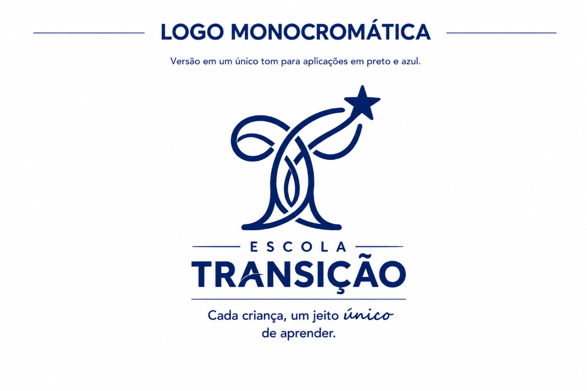

Identidade Flexível
Variações & Submarcas
Um ecossistema visual dinâmico, desenhado para se adaptar a diferentes formatos, fundos e momentos de aprendizagem da criança.
Fundo Claro
Aplicação padrão para materiais institucionais, ofícios e fundos brancos.
Monocromática
Versão otimizada para impressões em uma cor, carimbos e faxes.

Negativa
Aplicação de alto contraste para fundos escuros e fotografias.
Transição Baby
Cuidar é o primeiro aprender. Afeto e segurança emocional.
Transição Kids
Descobrir é o nosso jeito. Exploração criativa e socialização.
Prancha Oficial
Aplicações com Neuroescola Alcione Horny